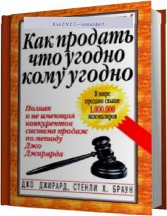

QQDunyoning eng buyuk savdogaridan samarali savdo sirlari va usullari.
Ushbu kitob dunyodagi eng buyuk savdogar deb tan olingan Jo Jirardning boy tajribasiga asoslangan bo'lib, har qanday mahsulotni mijozlarga muvaffaqiyatli sotish sirlarini ochib beradi. Muallif har bir savdogar uchun amaliy maslahatlar, mijozlar bilan muloqot qilish va bitim tuzishning samarali usullarini o'rgatadi. Qo'llanma savdo sohasida o'z faoliyatini yuritayotganlar va daromadini oshirishni istaganlar uchun mo'ljallangan.